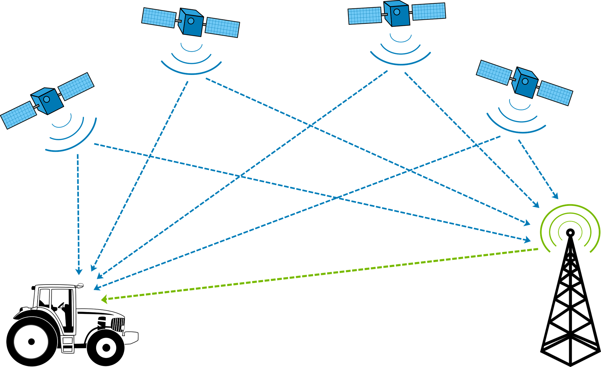

Geografische Lage
Standort bezieht sich auf die Fähigkeit, den geografische Position eines Objekts oder einer Person. Dies beinhaltet die Nutzung von Technologien wie GPS (Global Positioning System) und andere Geolokalisierungssysteme.
-
Die Lokalisierung basiert auf Technologien, die es ermöglichen bestimmen, wo sich ein Objekt oder eine Person im Raum befindet, oft mit großer Präzision. Zu den beliebtesten Werkzeugen Häufig finden wir GPS (Global Positioning System), das nutzt Satelliten zur Triangulation einer Position sowie Wi-Fi-Netzwerke, Bluetooth-Beacons und Relaisantennen Mobilfunkbetreiber, die Lösungen anbieten Lokalisierung in Innenräumen oder in dichten Umgebungen. Es wird häufig in alltäglichen Anwendungen eingesetzt: GPS-Navigation für Reisen, Aktivitäts-Tracking Sport über Smartwatches, Geräteortung verloren mit Diensten wie "Find My Device", oder sogar Lieferdienste, mit denen Sie Pakete live verfolgen können oder die Fahrer. Im Handel ermöglicht Ihnen der Standort, auf die Stelle zugeschnittene Anzeigen oder Angebote anbieten geografischer Standort eines Benutzers.
-

- 